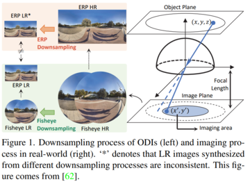
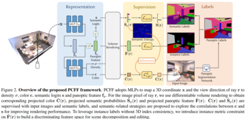
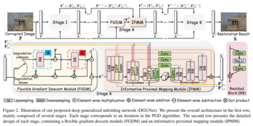
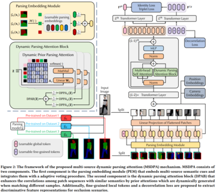
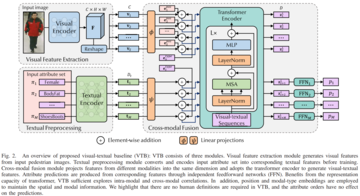

|
Qian Wang (王 茜)
I am a master student at the School of Electronic and Computer Engineering,
Peking University Shenzhen Graduate School,
advised by Prof. Jian Zhang.
I received the B.E. degree from the College of Computer Science,
Sichuan University, in 2022.
My research interest includes image restoration, image/video generation and image/video editing.
Email |
Google Scholar |
GitHub
|
|
|
Publications
|
|

|
NTIRE 2023 Challenge on 360deg Omnidirectional Image and Video Super-Resolution: Datasets, Methods and Results
Mingdeng Cao,
et al.,
Qian Wang,
et al.,
Bingchun Luo
CVPR Workshop, 2023
[Paper]
We develop a spatial-temporal two-stage model,
wherein the first stage is a 4x image super-resolution network,
and the second stage is a 4x video super-resolution network.
|
|

|
Panoptic Compositional Feature Field for Editable Scene Rendering with Network-Inferred Labels via Metric Learning
Xinhua Cheng,
Yanmin Wu
Mengxi Jia,
Qian Wang,
Jian Zhang
CVPR, 2023
[Paper]
We introduce metric learing for leveraging 2D network-inferred labels
to obtain discriminating feature fields, leading to 3D segmentation and editing results.
|
|

|
Deep Generalized Unfolding Networks for Image Restoration
Chong Mou,
Qian Wang,
Jian Zhang
CVPR, 2022
[Paper]
[Code]
We integrate a gradient estimation strategy into the gradient descent step of the Proximal Gradient Descent algorithm,
driving it to deal with complex real-world image degradation.
|
|

|
More is better: Multi-source Dynamic Parsing Attention for Occluded Person Re-identification
Xinhua Cheng*,
Mengxi Jia*,
Qian Wang,
Jian Zhang (* equal contribution)
ACM MM, 2022
[Paper]
We introduce the multi-source knowledge ensemble in occluded re-ID
to effective leverage external semantic cues learned from different domains.
|
|

|
A Simple Visual-Textual Baseline for Pedestrian Attribute Recognition
Xinhua Cheng*,
Mengxi Jia*,
Qian Wang,
Jian Zhang (* equal contribution)
TCSVT, 2022
[Paper]
[Code]
We model pedestrian attribute recognition as a multimodal problem and
build a simple visual-textual baseline to captures the intra- and cross-modal correlations.
|
Template is adapted from Here
Last updated: Dec 2023
|
|